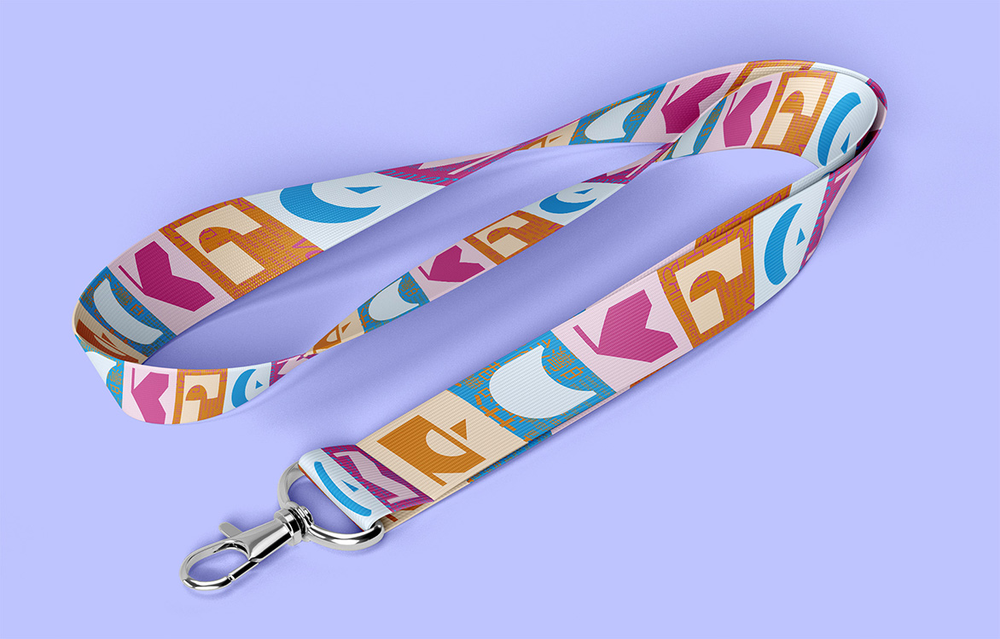
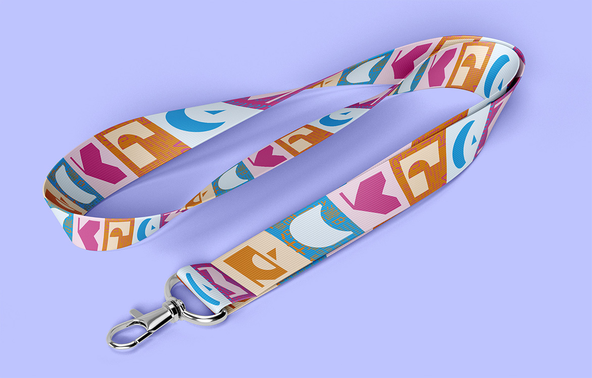

Posters
Vibrant colours were chosen to spark that feeling of celebration, excitement, and joy. Each poster features one primary colour, while borrowing a secondary colour from another in the series. This not only creates a visually cohesive set of posters, but emphasizes the emotional feeling of connection. The large outlined type on the posters spell the headlining artist of that day in that language’s glyphs. All typography used throughout the poster and application come from the Noto type family; a type family that is accessible across the widest range of writing systems.
 

Typographic Texture
In addition to information regarding the date, location, and musician lineup, the typographic texture used in the iconography also includes snippets of text that pulls two distinct target demographics. Text in English encourages the reader to step outside their comfort zone and discover Vancouver’s cultures, and text in the festival’s featured languages implores readers to come and share their cultural experiences.
Neck Label
Once bought, the paper on the neck can be unfurled to unveiled the true degradation of the painting’s story, and how it ties into the wine’s featured sin.